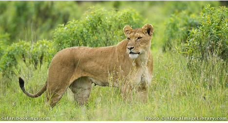
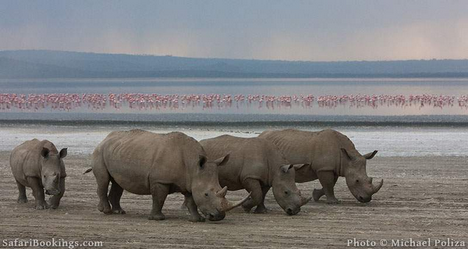
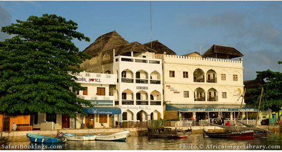

Travellers history to kenya
Who are we??
A part of Eastern Africa, the territory of what is known as Kenya has seen human habitation since the beginning of the Lower Paleolithic. The Bantu expansion from a West African centre of dispersal reached the area by the 1st millennium AD. With the borders of the modern state at the crossroads of the Bantu, Nilo-Saharan and Afro-Asiatic ethno-linguistic areas of Africa, Kenya is a truly multi-ethnic state.
The European and Arab presence in Mombasa dates to the Early Modern period, but European exploration of the interior began in the 19th century. The British Empire established the East Africa Protectorate in 1895, from 1920 known as the Kenya Colony.[1]
The independent Republic of Kenya was formed in 1963. It was ruled as a de facto one-party state by the Kenya African National Union (KANU), led by Jomo Kenyatta from 1963 to 1978. Kenyatta was succeeded by Daniel arap Moi, who ruled until 2002. Moi attempted to transform the de facto one-party status of Kenya into a de jure status during the 1980s, but with the end of the Cold War, the practices of political repression and torture which had been "overlooked" by the Western powers as necessary evils in the effort to contain communism were no longer tolerated.
Moi came under pressure, notably by US ambassador Smith Hempstone, to restore a multi-party system, which he did by 1991. Moi won elections in 1992 and 1997, which were overshadowed by politically motivated killings on both sides. During the 1990s, evidence of Moi's involvement in human rights abuses and corruption, such as the Goldenberg scandal, was uncovered. He was constitutionally barred from running in the 2002 election, which was won by Mwai Kibaki. Widely reported electoral fraud on Kibaki's side in the 2007 elections resulted in the 2007–2008 Kenyan crisis. Kibaki was succeeded by Uhuru Kenyatta in the 2013 general election. There were allegations that his rival Raila Odinga actually won the contest, however, the Supreme Court through a thorough review of evidence adduced found no malpractice during the conduct of the 2013 general election both from the IEBC and the Jubilee Party of Uhuru Kenyatta.Uhuru was 're-elected in office five years later in 2017. His victory was however controversial. The supreme court had vitiated Uhuru win after Raila Odinga disputed the result through a constitutionally allowed supreme court petition. Raila Odinga would later boycot a repeat election ordered by the court, allowing Uhuru Kenyatta sail through almost unopposed with 98% of the vote.
Magical Scenes in Kenya
1.Mt.Kenya
At 5,199m/17,057ft high,  the largest mountain in Kenya is also the second highest in Africa after Kilimanjaro across the border in Tanzania. The stratovolcano was created around three million years ago when the East African Rift (part of the Great Rift Valley) opened up. Today its lower slopes are covered in forests of bamboo and African rosewood trees and the mountain runoff provides water for over two million people. With its rugged snowy peaks and glaciers along the upper slopes, Mt Kenya is one of the most beautiful places to visit in Kenya. Travelers hoping to summit can either hike to Point Lenana, one of the three peaks, taking the world’s highest via ferrata route (iron way), or climb to the highest point, Batian Peak, though this requires experience of technical climbing.
the largest mountain in Kenya is also the second highest in Africa after Kilimanjaro across the border in Tanzania. The stratovolcano was created around three million years ago when the East African Rift (part of the Great Rift Valley) opened up. Today its lower slopes are covered in forests of bamboo and African rosewood trees and the mountain runoff provides water for over two million people. With its rugged snowy peaks and glaciers along the upper slopes, Mt Kenya is one of the most beautiful places to visit in Kenya. Travelers hoping to summit can either hike to Point Lenana, one of the three peaks, taking the world’s highest via ferrata route (iron way), or climb to the highest point, Batian Peak, though this requires experience of technical climbing.
2.Ol Pejeta

A Big Five conservancy in the foothills of Mt Kenya, Ol Pejeta Conservancy is known for its conservation initiatives. It was where the last male northern white rhino, Sudan, died in 2018; the last females of the sub-species still live at Ol Pejeta, protected around the clock. The Sweetwaters Chimpanzee Sanctuary is in the Laikipia conservancy, too, providing a home for chimps rescued from the black market. One of the most interesting places to visit in Kenya, Ol Pejeta is a great destination to learn about the relationship between people and wildlife and the challenges faced in the conservation industry. Come for the day or enjoy a longer stay for lion tracking, bush walks and night drives.
3.Lake Nakuru

Lake Nakuru National Park is home to a vast number of bird species, most notably huge flocks of flamingos – they have been known to number in their millions, though the lake has seen a decrease in recent times. Lake Nakuru is one of the Rift Valley lakes, and the birds are attracted to the high levels of algae in the water. Pelicans, cormorants, the African fish eagles, Verreaux’s eagles, Goliath herons and hammerkops are also seen around the lake. In addition, you can spot black and white rhinos, Rothschild’s giraffes, lions and cheetahs throughout the national park.
4.Lamu Town

Kenya is not only noted for its safari reserves and savannah, but also its Indian Ocean coastline. The Lamu archipelago is amongst the most interesting places to visit in Kenya as an area brimming with history. Lamu town was founded around 1370 as a Swahili port that has since been inhabited by Europeans, Indians and Persians. As such, it’s a melting pot of multicultural influences. There are 23 mosques, a 19th-century fort and traditional dhow boats bobbing offshore. Then of course there are the surrounding peaceful and unspoilt beaches. The perfect place to unwind after a Elon safari tour